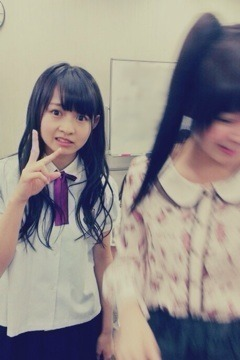

| 2012/09 19 Wed | 233回目*marika |
いつも読んでくださってる方、
初めて読んでくださった方、
コメントしてくださった方、
ありがとうございます♪

写り込んだったん誰だったん
...
今日ゆっくりしてたー

なぜか急に掃除したくなるとき
ありません？
それは昨日の夜なんだけど笑
部屋めっちゃきれいにしたから
気持ちもスカッてしてるよ。
床に何もないって気持ちがいんだね！
これで寒い季節になったら最高だ

部屋がじめっとしないから
**********
 乃木坂ってどこ？
乃木坂ってどこ？
運動会で何が1番楽しかったですか？
 ドッヂボール大嫌いなのに
ドッヂボール大嫌いなのに
なんでか楽しかったです。
おいでシャンプーのDVDの
歌とダンスすごい気にってます。
直に、見れる機会は来ますか？
嬉しいっっっ‼
ぜひ覚えてください笑
見れるかもしれないし、
見れないかもしれない。
いつ見れるんだろうね
 ←
←
←
妹にするなら誰がいい？
みんなかわいいけど、、
まあやが妹だったら絶対楽しい

服を着る上で、
大切にしてることとか、
いい意味でのこだわりとか
ありますか？？
そんなにないよ

好きなもの好きなように着てます。
自分が必要なものは買うけど、
今まで使ってたものもすぐ捨てずに
大事に使うようにしてるよ！
どんな匂いが好き?????
晴れた日に干した布団のにおい
木、森のにおい、夜の外のにおい
前に久しぶりに会った親友に
もらった香水のにおい
...良い匂いで気に入ってる

love passportのOne Loveというやつ
普段香水つけないけど、
これからちょいとつけようかしら
 ))
))
))
個人的にミネトンカ
履いてほしい！
ってもう所有してるのかな？
ミネトンカのサンダルもブーツも
持ってます
 履きやすいかわいい
履きやすいかわいい

履きやすいかわいい
**********
名古屋全握のレーン決まりました

第8レーン 美雲、生駒、私
です‼
ででーん
意外な組み合わせ！びっくり！
楽しそう

握手楽しみ
♪るんるん
♪るんるん
最後に...
なかいさんで撮ろうとしたけど、
ひめかに逃げられて、
私がそっく(ショックの最大級)な顔
してる写真でも載せようか。

うそですひめかが動いて
ぶれただけです。
ちゃっかりピースする自分。
「顔wwww」
これ見て笑ってから寝なさい←ぇ
おやすみなさい♪
まりか
コメント(162)
2012/09/19 21:42